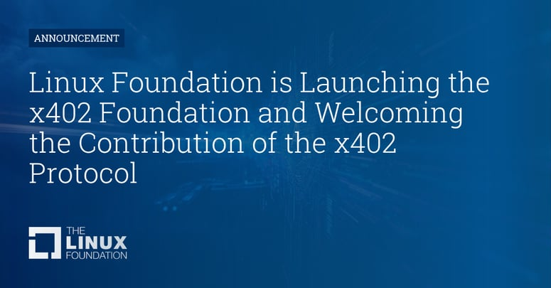

AI 에이전트가 직접 결제한다 — x402, HTTP에 지갑을 심다
Executive Summary
2025년 5월, Coinbase는 30년 동안 사용되지 않던 HTTP 상태 코드 하나를 꺼내들었다. HTTP 402 — "Payment Required." 인터넷 창시자들이 언젠가 쓰일 것이라 남겨두고 잊혀진 그 코드가, AI 에이전트의 자율 결제 표준으로 부활했다.
x402는 서버가 API 요청에 402로 응답하면 클라이언트(에이전트)가 자동으로 USDC를 송금하고 접근권을 얻는 구조다. 계정 가입 없이, API 키 관리 없이, 사람의 개입 없이. 2025년 12월 V2가 출시됐고, 2026년 4월 2일 Linux Foundation에 합류하면서 Google, AWS, Microsoft, Stripe, Visa, Mastercard, 그리고 KakaoPay까지 20여 개 기업이 공식 지지를 표명했다.
이미 1억 건이 처리됐다. 구독 모델이 쿼리당 결제로 바뀌고, 데이터 파이프라인에 결제가 내장된다. 그 인프라가 완성되는 순간을 이 글에서 해부한다.
HTTP 402의 부활 — 30년 만에 깨어난 상태 코드
HTTP 상태 코드는 404(Not Found), 500(Internal Server Error)처럼 우리가 흔히 마주치는 숫자들이다. 그런데 402는 다르다. 1991년 HTTP 표준을 설계할 때 "언젠가 유료 인터넷이 올 것"이라는 기대로 예약해놓은 코드였지만, 신용카드와 구독 모델이 지배하면서 30년 넘게 잠들어 있었다.
Coinbase는 이 코드가 이제 비로소 시대를 만났다고 봤다. 인터넷의 주요 행위자가 사람에서 AI 에이전트로 바뀌고 있기 때문이다. 에이전트는 계정을 만들지 않는다. KYC를 거치지 않는다. 구독 카드를 넣지 않는다. 그러나 HTTP 요청은 보낸다. 그 요청에 결제를 내장할 수 있다면, 인터넷의 결제 방식이 근본적으로 달라진다.
x402의 핵심 명제
"Payments on the internet are fundamentally flawed. Filling out a form is a human behavior that doesn't match the programmatic nature of the internet. It's time for an open, internet-native form of payments."
— x402.org
1.1 기존 방식의 문제
AI 에이전트가 새 API를 써야 할 때 지금 어떤 일이 벌어지는지 생각해보자.
기존 방식 (5단계)
- 1. API 제공사에 계정 생성 (시간 소요)
- 2. 결제 수단 등록, KYC 완료 대기
- 3. 크레딧 선구매 또는 구독 선택
- 4. API 키 발급 및 보안 관리
- 5. 결제 — 느린 처리, 수수료, 분쟁
x402 방식 (3단계)
- 1. HTTP 요청 → 서버가 402로 응답
- 2. 에이전트가 USDC 즉시 송금
- 3. API 접근 완료 — 계정·키 불필요
1.2 타임라인 — 1년의 성장

실제로 어떻게 작동하나 — 프로토콜 해부
x402의 흐름은 HTTP 요청-응답 사이클을 그대로 따른다. 새 통신 규약이 아니라 기존 HTTP 위에 결제를 얹은 구조다.
2.1 5단계 결제 흐름
클라이언트 → 서버: HTTP 요청
에이전트가 유료 API 엔드포인트에 일반 GET/POST 요청을 보낸다.
서버 → 클라이언트: 402 Payment Required
서버가 기계가 읽을 수 있는 결제 조건을 담아 응답한다.
HTTP/1.1 402 Payment Required
Content-Type: application/json
{
"accepts": [{
"scheme": "exact",
"network": "base-mainnet",
"maxAmountRequired": "1000000", // $1.00 USDC
"asset": "0x833589...USDC",
"payTo": "0xMerchantAddress"
}],
"description": "Weather data - 1 request"
}클라이언트 → 서버: 결제 헤더와 함께 재요청
에이전트가 온체인 USDC 송금을 실행하고, 결제 인증 헤더를 달아 원래 요청을 다시 보낸다.
결제 퍼실리테이터: 검증 및 정산
Coinbase CDP 또는 서드파티 퍼실리테이터가 결제 페이로드를 검증하고 온체인 정산을 확인한다.
서버 → 클라이언트: 200 OK + 리소스
정산 확인 후 요청된 데이터를 반환한다. 전체 과정은 수초 이내 완료.

2.2 코드 한 줄로 유료화
서버 측 구현은 미들웨어 한 줄로 끝난다. Node.js 예시:
app.use(
paymentMiddleware({
"GET /weather": {
accepts: [{ network: "base-mainnet", asset: "USDC", maxAmount: "1.00" }],
description: "Weather data per request"
},
"GET /analytics": {
accepts: [{ network: "base-mainnet", asset: "USDC", maxAmount: "0.10" }],
description: "Analytics query"
}
})
);2.3 V2에서 달라진 것
2025년 12월 출시된 V2의 핵심 업그레이드:
- • 지갑 기반 세션: 한 번 지불하면 이후 같은 에이전트는 재결제 없이 세션 유지 가능
- • 동적 payTo 라우팅: 요청 내용에 따라 수신자·금액을 실시간 결정. 마켓플레이스·멀티테넌트 API 지원
- • 멀티체인 기본값: Base, Solana, Polygon, 기타 L2까지 커스텀 코드 없이 지원
- • 레거시 호환: ACH·SEPA·카드 결제도 같은 인터페이스로 처리 가능 (디퍼드 결제 스킴)
- • 플러그인 SDK: 새 체인·결제 방식을 핵심 스펙 수정 없이 확장 가능
로봇이 직접 계산서를 낸다 — 에이전트 경제의 현실
x402가 가장 극적으로 구현된 사례는 OpenMind의 로봇 개 'Bits'다. Bits는 배터리가 부족해지자 스스로 가장 가까운 충전 스테이션을 찾아가, 플러그를 꽂고, USDC로 전기요금을 결제했다. 사람의 개입은 없었다. HTTP 요청 → 402 응답 → USDC 송금 → 충전 시작. 이것이 에이전트 경제의 실물이다.
에이전트 자율결제 시나리오
AI 어시스턴트가 할로윈 의상을 구매한다 → 각 쇼핑몰 API에 402 결제 후 자동 주문.
AI 트레이딩 에이전트가 실시간 금융 데이터를 요청당 마이크로페이먼트로 구독한다.
브라우저 렌더링 에이전트가 월정액 대신 세션당 결제한다.
3.1 대표적인 서비스들
x402 생태계에는 이미 수십 개 서비스가 참여 중이다. 핵심 파트너들:
Workers와 AI Agents SDK에 x402 네이티브 지원. MCP 서버에서 유료 도구를 노출할 수 있다. pay-per-crawl — 웹 크롤러가 콘텐츠를 읽을 때 건당 결제하는 모델도 시범 운영 중.
x402-next 미들웨어로 Next.js API 라우트에 페이월을 한 줄로 추가. x402-fetch 클라이언트 래퍼로 유료 엔드포인트 자동 결제.
블록체인 분석·리서치 API를 x402로 게이팅. AI 에이전트가 구독 없이 온체인 인텔리전스를 요청당 구매한다.
x402와 Agent Commerce Protocol(ACP) 통합. 기존 법정화폐 결제 인프라와 스테이블코인 결제를 동일한 인터페이스로 처리.
에이전트가 이메일을 보내면서 동시에 결제를 처리하는 통합 워크플로. 에이전트 간 자동 자금 이동.
3.2 MCP + x402 — 도구에 가격표가 붙는다
Model Context Protocol(MCP)과 x402의 결합은 특히 주목할 만하다. MCP 서버가 AI 에이전트에게 제공하는 개별 도구(tool)에 가격표를 붙이는 것이 가능해진다.
// MCP 서버: 무료 도구와 유료 도구 혼용
this.server.paidTool(
"advanced-analysis",
"Deep data analysis with proprietary models",
0.05, // $0.05 per call
{ dataset: z.string() },
{},
async ({ dataset }) => { /* 분석 로직 */ }
);에이전트가 유료 도구를 호출하면 MCP 서버가 402로 응답하고, 에이전트는 자동으로 결제 후 재시도한다. 인간 확인 여부는 설정으로 제어.
데이터 경제의 결제 인프라가 바뀐다
x402가 데이터 비즈니스에 가져오는 변화는 단순한 결제 편의를 넘어선다. 비즈니스 모델 자체를 재설계하는 레버다.
4.1 구독에서 쿼리당 결제로
오늘날 데이터 API는 대부분 월정액 구독 모델이다. 많이 쓰면 손해 보고, 적게 쓰면 낭비한다. x402가 가능하게 하는 것은 pay-per-query — 쿼리 한 건, 분석 한 번, 데이터셋 하나에 정확히 값을 매기는 구조다.
월 $500 구독
→ 쿼리 1,000건 가능
→ 100건만 써도 $500
쿼리당 $0.50
→ 100건 사용 → $50
→ 에이전트 자동 결제
4.2 데이터 마켓플레이스의 진화
x402는 데이터 마켓플레이스 아키텍처를 단순화한다. 판매자는 API 엔드포인트에 미들웨어를 추가하고, 구매자(에이전트)는 자동으로 결제한다. 중간에 플랫폼 계정·크레딧·청구 사이클이 사라진다.
- • Ocean Protocol식 데이터셋 판매 — 데이터셋 접근권을 x402 게이트로 보호, 에이전트가 필요한 만큼 구매
- • 실시간 데이터 스트리밍 — 금융 시세, 센서 데이터를 시간당·이벤트당 단위로 판매
- • AI 모델 추론 결과 — 예측 모델 API를 쿼리당 가격으로 외부 판매
- • 데이터 품질 검증 — DataClinic 같은 진단 서비스가 에이전트 파이프라인에 자동 삽입
4.3 에이전트가 데이터 품질을 자율 구매한다
구체적인 시나리오를 상상해보자. 제조사의 AI 에이전트가 불량 예측 모델을 돌리기 전에, 데이터 품질 진단 API에 자동으로 요청을 보낸다. 402가 오면 $0.30을 결제하고 진단 리포트를 받는다. 품질이 기준 미달이면 데이터 정제 API에 다시 결제한다. 사람이 개입하지 않아도 데이터 파이프라인의 품질 게이팅이 자동화된다.
한국에서도 쓸 수 있나 — KakaoPay와 원화 스테이블코인의 미래
결론부터: 기술적으로는 지금도 가능하다. 규제 환경은 2026년이 변곡점이다.
5.1 KakaoPay — Linux Foundation 창립 멤버
2026년 4월 2일 발표된 x402 Foundation의 Linux Foundation 편입 멤버 목록에 KakaoPay가 이름을 올렸다. Visa, Mastercard, American Express, Google, AWS, Stripe와 어깨를 나란히 한 것이다. 이것은 상징이 아니다 — KakaoPay가 x402 기반의 에이전트 결제 인프라를 자사 플랫폼에 통합할 의향을 공식화했다는 신호다.
x402 Linux Foundation 창립 멤버 (2026.04.02)
5.2 원화 스테이블코인과의 시너지
x402의 현재 주력 통화는 Base 체인의 USDC다. 한국 서비스가 x402를 도입하려면 달러 스테이블코인을 써야 한다. 그러나 상황이 바뀌고 있다.
- • Visa는 "한국은 스테이블코인 실험의 최적 테스트베드"라고 공개 발언 (2026.04)
- • KB·신한·하나·토스 등이 원화(KRW) 스테이블코인 발행을 준비 중
- • 디지털자산기본법 입법 논의 중 — 스테이블코인 발행 자기자본 요건 등 구체화
- • x402 V2는 멀티체인·멀티에셋 지원 — KRW 스테이블코인이 발행되면 x402 퍼실리테이터 추가만으로 통합 가능
5.3 지금 당장 적용할 수 있는 것
KRW 스테이블코인을 기다리지 않아도 된다. 지금 할 수 있는 것:
B2B 데이터 API
해외 AI 에이전트 고객을 대상으로 USDC 기반 x402 엔드포인트 제공. 국내 규제와 무관하게 글로벌 에이전트 마켓 접근.
MCP 도구 수익화
Claude, GPT 등 AI 에이전트가 쓰는 MCP 서버에 x402 유료 도구를 추가. 한국 개발자도 참여 가능.
DataClinic이 x402 경제에서 맡을 자리
x402는 페블러스의 핵심 서비스인 DataClinic에 직접적인 비즈니스 기회를 만들어준다.
6.1 DataClinic MCP + x402 시나리오
DataClinic은 이미 데이터셋 진단·품질 평가 인프라를 보유하고 있다. 이것을 MCP 서버로 외부에 노출하고, x402로 수익화하는 경로가 열려 있다.
DataClinic MCP 서버를 공개 — "diagnose_dataset", "get_quality_score", "compare_classes" 등의 도구를 등록
각 도구에 x402 가격 설정 — 예: 진단 리포트 $0.50, 클래스별 분석 $0.10
전 세계 AI 에이전트가 데이터 파이프라인 중 DataClinic 진단을 자동 호출 → USDC 수익 발생
6.2 Physical AI 파이프라인 적용
제조·물류·자율주행 등 Physical AI 영역에서 DataClinic의 데이터 품질 진단은 높은 가치를 가진다. AI 에이전트가 학습 데이터셋을 자율 조달할 때, x402 게이팅된 DataClinic API가 품질 검문소 역할을 할 수 있다.
6.3 지금 당장 살펴볼 것
- • Coinbase CDP 개발자 계정 개설 → x402 무료 티어(월 1,000 트랜잭션) 테스트
- • DataClinic API 엔드포인트에 x402 미들웨어 PoC — Node.js 기준 코드 한 줄
- • KakaoPay의 x402 로드맵 모니터링 — 원화 결제 통합 시 KakaoPay 퍼실리테이터 연동
- • Cloudflare Workers 위에 DataClinic 경량 API 배포 → x402 pay-per-query 글로벌 접근점 확보
DataClinic 연결
DataClinic은 AI·ML 데이터셋의 품질 진단 서비스입니다. 이미지·텍스트·정형 데이터 등 다양한 형태의 학습 데이터 불균형, 아웃라이어, 품질 문제를 자동으로 탐지합니다. x402 기반의 pay-per-query 모델이 도입되면, DataClinic은 전 세계 AI 에이전트 파이프라인에 자동으로 삽입될 수 있는 품질 게이팅 인프라가 됩니다.
DataClinic 살펴보기 →